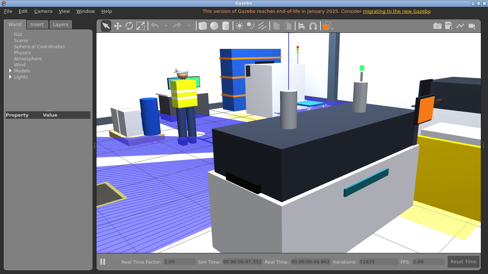
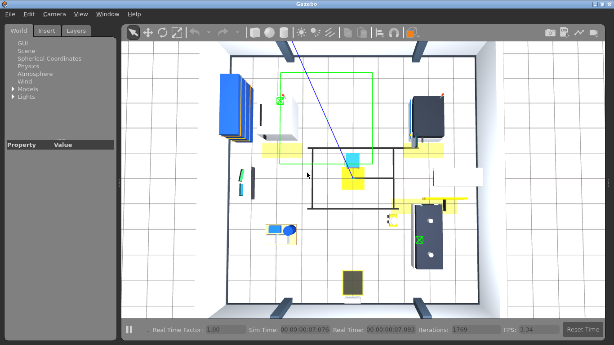
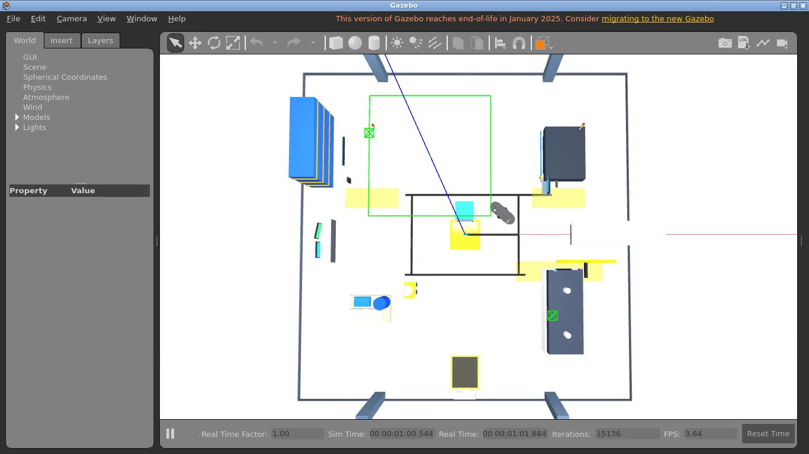
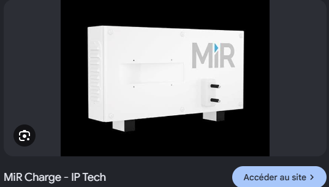
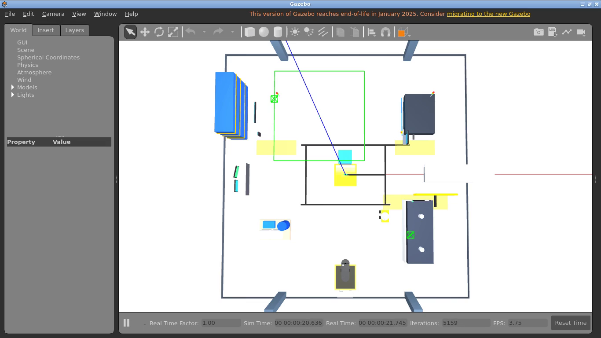

Rapport d'Avancement Technique : Navigation Autonome Inter-Lignes, Sécurité Active & Amarrage Précis

Automatisation du transit inter-lignes de cartes électroniques (PCB) au sein d'un atelier CMS moderne, en remplacement des transferts manuels lents et accidentogènes.
Prise en charge automatique : Départ de la borne MiR Charge (ST0) ➔ Récupération du PCB à la sérigraphie MPM (ST1) ➔ Dépose sur convoyeur (ST2) ➔ Retour amarrage ST0.
Cohabitation totale avec les opérateurs d'usine : arrêt d'urgence immédiat sur obstacle mobile, avertisseur sonore, et contournement dynamique des obstacles fixes.

Middleware temps réel sous Ubuntu 22.04 LTS (WSL2 / Windows 11). Communication nodale robuste et découplée.
Moteur physique haute fidélité réglé à 250 Hz pour un comportement dynamique et odométrique sans dérive.
Contrôleur industriel Regulated Pure Pursuit (RPPC) : suivi de trajectoire fluide, gestion des virages et vitesse modulée.
Filtre particulaire Monte-Carlo adaptatif couplé aux cartes de coût locale et globale pour l'évitement d'obstacles.
Modélisation exacte des murs périmétriques de 2.6m de haut, piliers porteurs et couloirs de circulation normalisés.
Positionnée à (0.0, -3.80). Station de recharge industrielle 24V DC pour l'attente et le maintien de charge.
Positionnée à (1.80, 0.65). Ligne 1 de dépose de pâte à braser où l'AMR prend en charge le PCB terminé.
Positionnée à (-1.80, 0.65). Ligne 2 équipée de rouleaux de convoyage pour l'inspection optique automatisée.
L'opérateur piéton traverse l'allée centrale à y = -1.60m. Le LiDAR 2D Hokuyo le détecte à d = 1.01m.
Dès franchissement du gabarit de sécurité (Protection Field), la commande moteur est coupée immédiatement (cmd_vel = 0) en moins de 100 ms.
Déclenchement automatique de la mélodie industrielle d'avertissement (amr_safety_melody.wav) via le transducteur pour alerter l'humain.
Dès que l'opérateur a achevé sa traversée et dégagé le gabarit, l'alarme s'arrête et l'AMR reprend sa trajectoire vers ST1.
Un chariot technique de maintenance est abandonné au centre du carrefour (x=0.0, y=0.65), bloquant l'axe direct ST1 ➔ ST2.
Le LiDAR intègre le chariot en direct dans la costmap locale et globale de Nav2 sous forme de zone de coût de collision interdit.
Le planificateur Navfn et le contrôleur RPPC recalculent instantanément une trajectoire d'évitement en boucle par le couloir Nord (y ≈ 1.25m).
L'AMR maintient un dégagement latéral de plus de 60 cm par rapport au chariot, évitant tout contact avant d'arriver au poste ST2.

Arrivée de haute précision face à la sérigraphie MPM à (1.80, 0.65) avec un écart de 21 cm. Chargement automatique de la carte (3.5s).
Navigation vers le convoyeur d'inspection à (-1.80, 0.65) avec un écart de 15 cm. Transfert automatique sur les rouleaux d'entraînement.
Chaque transition d'état (chargement, transit, déchargement) est notifiée sur le topic /mission_state pour intégration directe au MES.
Cycle de mission complet réalisé en 1 min 02s avec 100% de succès opérationnel et zéro incident matériel.
Inspiré de la borne réelle Mobile Industrial Robots (MiR Charge 24V/48V) avec plots de contact rétractables en façade.
Retour au quai Sud à (0.0, -3.80) avec un écart de positionnement inférieur à 15 cm et un écart de cap sous 17°.
Couplage mécanique direct entre les récepteurs de l'AMR et les broches 24V DC pour la recharge rapide des batteries LiFePO4.
Cycle sans aucune intervention humaine de câblage : maintien en charge permanente en attendant le prochain appel de ligne.

Mise en place d'un serveur virtuel Xvfb dédié avec framebuffer 24-bit RGB (1366x768), éliminant l'absence de root window sous WSLg.
Désactivation de l'affichage des 360 rayons LiDAR dans Gazebo (visualize=false) et des ombres lourdes : division par 3 de la charge GPU/CPU.
Encodage vidéo H.264 ultra-fluide à 30 FPS constants avec accélération de cadence : visionnage dynamique en 1 min 02s au lieu de 2 min saccadées.
Maintien de la boucle physique à 250 Hz (pas de 4 ms) pour garantir la fidélité de l'odométrie et éliminer toute dérive des roues.
